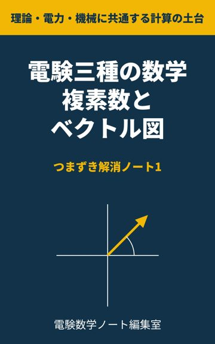
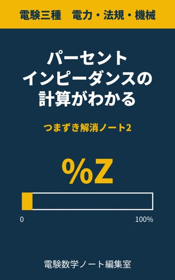
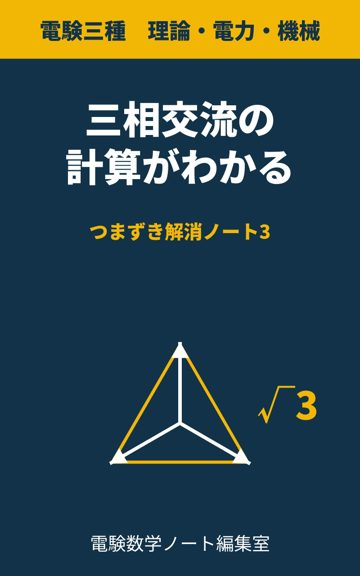
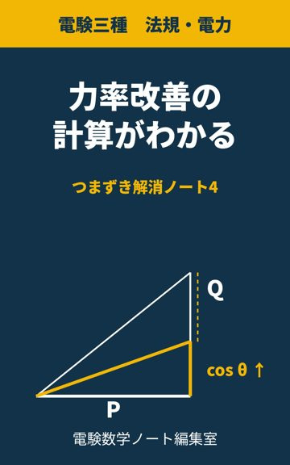
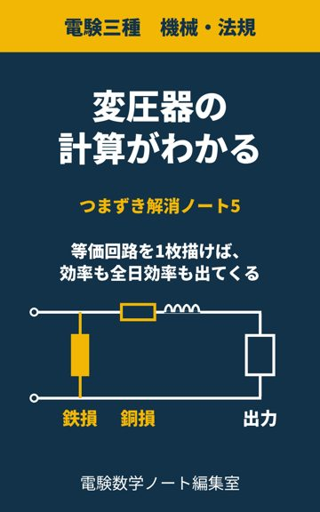
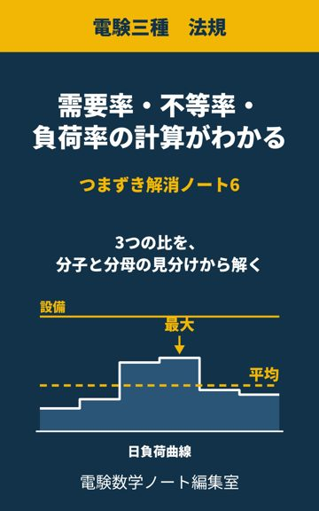
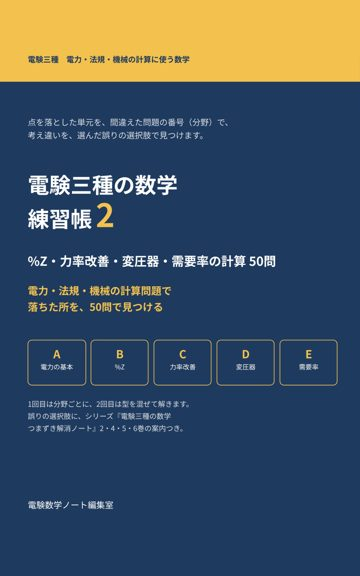

本の案内：止まっている所から、1冊を選ぶ
このページは、売り物の案内です。全部を買う必要はありません。止まっている所の1冊だけで足ります。
選び方どこで止まっているか分からないときは、先に計算の点検（10問）を解いてください。外した所に合う巻が分かります。全部できた人には、この本は要りません。
どの巻も、1つの計算を、どこで止まるか、なぜそうなるか、確かめの問題、の順で解いています。値段と、試し読みは、Amazon のページで確かめられます。







例題は編集室が作ったもので、過去問題そのものではありません。合格を約束する物ではありません。
最終更新：2026年11月15日